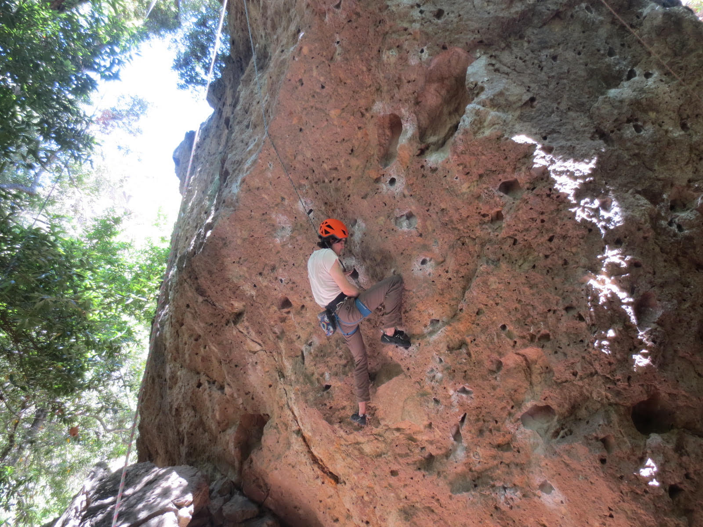
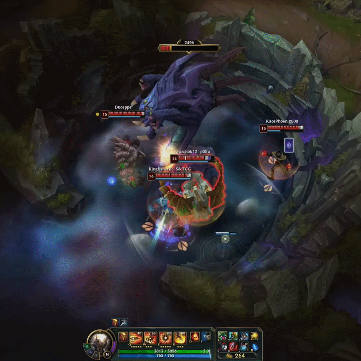
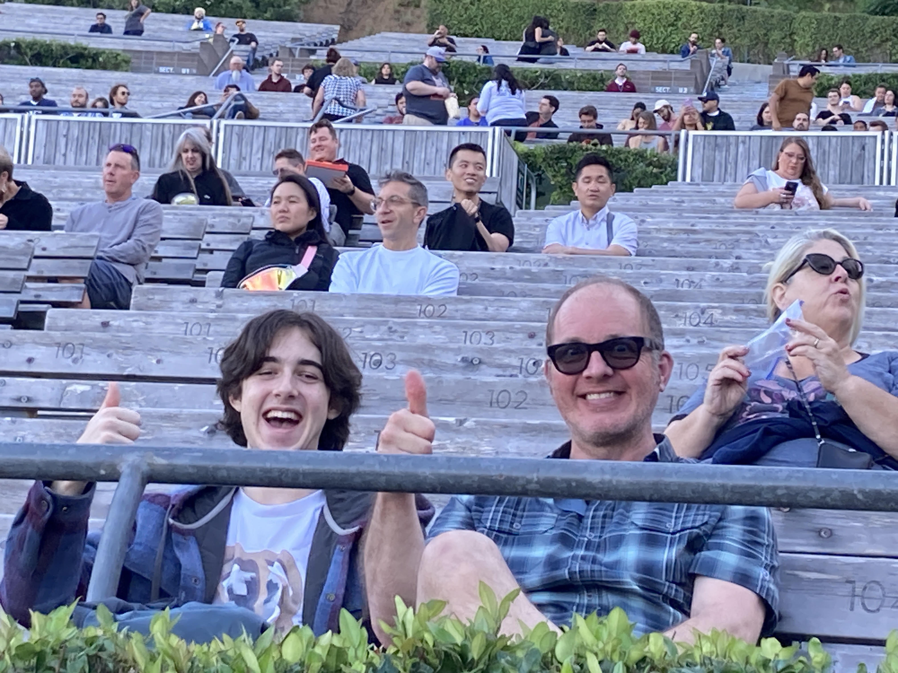
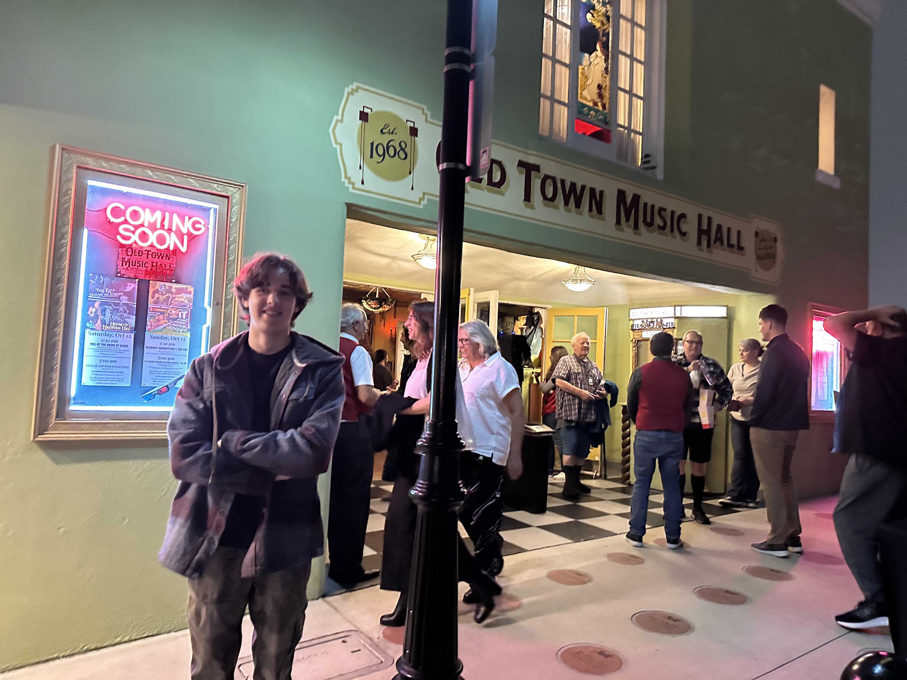

My life outside of programming...
Climbing

I've been climbing on and off for eight years. At my peak, I could climb v9 and 5.12d, and I used to compete. Now, I work at a climbing gym coaching kids ages 6–13, which I love because I get to help inspire the next generation of climbers. I love the puzzle of it, working out a problem and finally sending it. It's also brought me some of my best friendships, but I'll climb with almost anyone, whether they're crushing (and I'm struggling on) V10, or they're just starting out. Lately I've been getting more into hiking and outdoor climbing too.
Games

I've been playing games for a long time. Modding Minecraft as a kid is partially what got me into computer science in the first place. Some current favorites are Subnautica, League of Legends, and Blue Prince, and I especially love playing with friends, since the teamwork is half the fun. I'm also part of the Archipelago community, a project that lets games from completely different developers and studios talk to each other through a shared server and some pretty heavy modding.
Music

There's something about live, loud music that makes me feel like I'm part of something bigger. I go to as many concerts as I can, and rock is my genre of choice, with The Strokes, Arctic Monkeys, Cage the Elephant, Vampire Weekend, and Lovejoy constantly in my rotation. I picked up guitar about a year ago as another way to connect to that feeling. I'm not great yet, but I keep pushing to get better.
Movies

I love really good stories, and that's why I'm so into movies. Interstellar, Moonrise Kingdom, Scott Pilgrim vs. the World, and Bullet Train are a few favorites, but I'm always watching something new (and sometimes something old). I especially love the immersion of going to the theater. There's a big difference between simply watching a story and feeling like you're inside it.